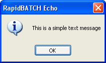

Message- and Statusboxes
RapidBATCH is equipped with many build-in dialog windows, that can be individually customized and optimized for the script they're used in. Before you begin to design your completely customized dialog windows in RapidBATCH (this subject will be discussed later), you first should take a look at the already existing build-in dialogs. These build-in dialogs mostly fit the needs of your RapidBATCH scripts. The advantage of using the build-in dialogs is, that you always have to write just one single line of code for e.g. read a value from the user or to display a text-message. Also you don't have to pay attention to the whole event-handling that is needed to make a dialog useable. Sure, for more powerful, individual and specialized dialog windows, you better should implement them for your own as described later, but there, you also have to code the complete event handing that has to be done behind the dialog. But anyway, this chapter now describes RapidBATCH's powerful build-in dialogs, how they're used and customized to bestly fit your purposes and use.
Message windows, the so called messageboxes, are the simpliest form to present messages and data to the user, and can also be used for simple user interaction (to let the user match an option). You had already learned to know the ECHO-instruction, displaying a simple messagebox on the screen. ECHO is the simpliest possibility to dispay an information, which is also one of the reasons why it is mostly used within our examples, to output a value or something like that.
Simple text output with the ECHO-instruction
A slightly similar purpose performs the CONFIRM-function, that displays a user dialog with a Yes-No-option. CONFIRM expects a return-variable (that gives information on the selected button), and a prompting text or question as parameter, that can be answered with "Yes" or "No". If the user hits the "Yes"-button, CONFIRM will return the value '0', else '-1', so this "answer" can be verified within a condition specified at IF/ELSEIF or UNTIL.
A simple Yes-No-confirmation with the CONFIRM-dialog.
%start
rem ask to stop the script
confirm [stop] = 'Do you want to stop the script?'
rem if "No" was hit, call the label "start"
if [stop] = '-1' goto 'start'
echo 'script was halted.'
end
Thus, ECHO and CONFIRM provide the most simple possibility to quickly display a message or to realize a Yes-No-prompt in your scripts.
To create more individual messageboxes, RapidBATCH also provides the MSGBOX-instruction. MSGBOX exists both as an instruction and as a function, having the same name! The reason for this special usage of MSGBOX is, that the MSGBOX-instruction is supported for RapidBATCH script backward compatibility. Programmers should deal more with MSGBOX as a function, but MSGBOX as instruction will also be possible in future versions.
MSGBOX expects as parameters a messagebox title, a message-text, and a so called messagebox-style value, that is represented by a calculated number.
A very simple messagebox is the result of the following line:
msgbox 'Information', 'Hello World', '0'
Or, if we call it as a function:
msgbox [result] = 'Information', 'Hello World', '0'
The messagebox-style, that is assigned as the third parameter to the MSGBOX function or instruction, is composed of a value specifying the set of buttons that should be shown, a value that specifies which of the four messagebox-icons should be displayed, and at least a value, which of the displayed buttons should be focussed by default. To retrieve, which button has been pressed, MSGBOX returns a corresponding, numerical value to the variable [errorcode], or, in case of using MSGBOX as a function, to the particular return-variable that is specified.
Possible button style values for messageboxes are the following ones:
| Style-ID: | Example: | Button-Style (particular return value for each button in brackets): |
| 0 |  | OK (1) |
| 1 |  | OK (1) + CANCEL (2) |
| 2 |  | CANCEL (3) + RETRY (4) + IGNORE (5) |
| 3 |  | YES (6) + NO (7) + CANCEL (2) |
| 4 |  | YES (6) + NO (7) |
| 5 |  | RETRY (4) + CANCEL (2) |
By adding one of the following values to the desired button-style, it is also possible to determine an icon that should be displayed on the left of the message text.
| Icon-Style: | Example: |
| 0 |  |
| 16 |  |
| 32 |  |
| 48 |  |
| 64 |  |
An example for an individual messagebox with three buttons and a warning icon is the following:
%start
msgbox [button] = 'A simple question!', 'Please hit one of the buttons.', '48' + '3'
if [button] = '6'
rem Case: Yes
echo 'You hit the "Yes"-button'
goto start
elseif [button] = '7'
rem Case: No
echo 'You hit the "No"-button'
goto start
else
rem Case: Canel
echo 'Goodbye!'
endif
By adding the value 0 to this style (for the first), 256 (for the second) or 512 (for the third) button, the keyboard input focus can be set to the desired button. Which button has the focus can be seen on the small, dashed rectagle around the button.
Example:
msgbox 'Test1', 'Focus 1', '64' + '3' + '0'
msgbox 'Test2', 'Focus 2', '64' + '3' + '256'
msgbox 'Test3', 'Focus 3', '64' + '3' + '512'
end
Additionally to the messageboxes we talked about until now, RapidBATCH does also provide another possibility to display message- and status-information: The INFOBOX!
Sometimes it is necessary to display status-informations, e.g. a "Please wait..."-message, when the script is performing a huge amount of system operations or by performing operations that need a lot of computing time. The INFOBOX-dialog can be shown or hidden whenever you, the programmer, wants this. It neither features any OK-button or something like that, nor it can be put into the background. It is just a box with information, displayed on the screen.
Image of an INFOBOX-dialog displayed on the screen.
infobox 'Hello World', 'show'
wait '5000'
end
In our case, INFOBOX is hidden automatically, because the script finished. To hide it manually, recall INFOBOX again in the following form
infobox '', 'hide'
or hide it using the more professional method, over the pre-declared variable [InfoBox_Enabled]. Is [InfoBox_Enabled] set to '-1' (also represented by the pre-declated variable [false]) or the value 'hide', the dialog is hidden. By setting it to a value of 0 (also represented by the pre-declated variable [true]) or 'show', RapidBATCH shows INFOBOX again with the same message that was set at the last INFOBOX call.
Example:
echo 'INFOBOX becomes shown now...'
infobox 'Hello World', 'show'
wait '2000'
echo 'INFOBOX becomes hidden now...'
[InfoBox_Enabled] = 'hide'
rem also possible:
rem [InfoBox_Enabled] = [false]
rem [InfoBox_Enabled] = '-1'
echo 'INFOBOX is hidden now!'
end
Because INFOBOX is an own dialog provided by RapidBATCH (unlike the above discussed messageboxes, which are internally provided by the Windows® operating system itself), INFOBOX can be completely individualized. For example, the programmer can define an individual width and height for the INFOBOX by setting the variables [InfoBox_Height] and [InfoBox_Width] to the desired size of pixels. By setting [InfoBox_X] and [InfoBox_Y] to a desired pixel position, the dialog can also be move to any point on the screen. By setting these variables to the value '0', the dialog is centered on the corresponding axis. By default, [InfoBox_X] and [InfoBox_Y] are both set to '0', centering the dialog automatically on the screen each time it is called.
Copyright © 2000-2006 by J.M.K S.F. Software Technologies, Jan Max Meyer
All rights reserved.